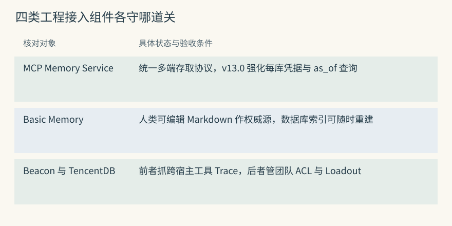
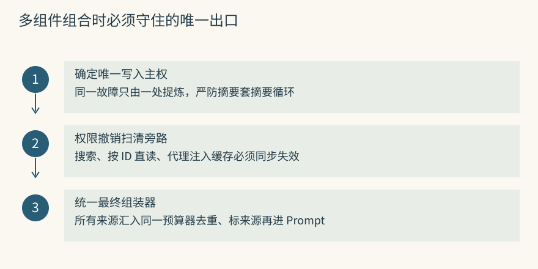

工程接入路线：MCP / 文件 / Trace / Team
算法跑通了，怎么接进团队每天在用的研发工作流？
到了这一章，你的记忆核心已经能存、能搜、能管时间。但真正要让全团队的 Claude Code、Cursor、CI 机器人和值班助手一起用起来，你会立刻撞上四个很现实的工程问题：
- 每个人用的 IDE 和终端客户端不一样，怎么共享同一套记忆后端？（MCP 协议层）
- 团队里的资深工程师想直接像改代码一样审查、修改记忆规程，不想面对黑盒数据库怎么办？（文件真相层）
- 助手排查线上故障跑了一堆命令，最后在聊天框里轻飘飘回一句“已修好”，真正的排障动作和验证输出怎么留下来？（行动 Trace 采集层）
- 核心支付组和企业大客户组共用一套服务，怎么管权限、发技能版本，还能在员工转岗时一键撤权？（团队资产治理层）
这一章拆解四个极具代表性的工程项目：MCP Memory Service、Basic Memory、Agent Beacon、TencentDB Agent Memory——它们不是互斥竞争对手，而是正好补齐了记忆系统“存和取之外”的四块工程拼图。

MCP Memory Service：用统一协议把多端客户端连到一个库
MCP（Model Context Protocol）规定了客户端和记忆服务怎么对话（工具与资源接口），让你不用给 IDE、CLI 和 Web 助手各写一套 SDK 胶水代码。
MCP Memory Service（2026-11-20 最新 v13.0.0，提交 d22f074da21d）同时暴露 MCP、REST、CLI 和管理看板，底层支持 SQLite-vec、Cloudflare hybrid 等存储后端：
- 独立的混合并集检索（hybrid.py）：SQLite 模式下并行跑 FTS5 BM25 和本地 ONNX 向量，按
content_hash取并集并补取纯全文命中的正文，不会出现“池外报错码救不回来”的问题；v13.0 还补齐了as_of历史时间查询与 FTS5 trigram 短词回退； - 可观测的后台巩固（consolidator.py）：支持按
daily / weekly / incremental跑衰减、关联、聚类、压缩与受控遗忘，v13.0 新增了分阶段 SSE 事件上报（consolidation_started / consolidation_phase / consolidation_completed）与 URL 直达单条记忆排查； - v13.0 生产安全补强：修复了 Cloudflare 后端每 store 独立凭据隔离的隐患——以前不同 store 如果存了一模一样的正文，因为按全局
content_hash写 Vectorize/R2，可能导致跨 store 覆盖向量元数据甚至误清另一个 store 的 tombstone，现在已在入库和删除路径全面按 store 隔离。
接入提醒：MCP 是传输协议，不是权限豁免证。 千万别把客户端随便传的 tags 当作身份隔离，OAuth 鉴权必须一直贯穿到每一条全文、向量、补取和按 hash 删除的路径。
Basic Memory：让人能直接打开编辑的 Markdown 当唯一真相源
很多研发团队极度反感把宝贵的工程规范锁在黑盒向量库里——改错一个字都不知道去哪修。Basic Memory 走了最对程序员胃口的路线：本地 Markdown 文件才是权威真相源，数据库索引只是随时可以删掉重建的派生视图。
你可以在仓库或知识库里直接维护一份 payment-gateway-release.md：
# payment-gateway 发布规范
## Observations
- [constraint] 发版前核对 idempotency_key TTL >= 最大重试窗口
- [source] 依据事故复盘 release-14
## Relations
- owned_by [[基础交易组]]
- relates_to [[PAY-409 排查手册]]entity_parser.py 负责把文件里的观察（observations）和显式关系（relations）解析进索引；context_service.py 的 build_context() 允许 Agent 已知 memory:// URI 时精准直读，再按限定的深度（depth）和条数（max_related）展开关联笔记。
落地时要盯紧三件事：文件改动到索引同步之间有短暂延迟、文件改名或多人并发编辑要防断链冲突、普通 Git 历史会永久留住删掉的敏感文本，以及商业分发前需评估它的 AGPL-3.0 许可证义务。
Agent Beacon：把“到底跑了哪些命令”留成铁证时间线
排障时最让人抓狂的，是助手在终端里改了三处配置、跑了五次测试，最后只总结了一句“已修复 PAY-409”。三个月后复发，谁也不知道它当时到底改了哪行、测试到底跑没跑过。
Agent Beacon（2026-11-20 提交 e99e3fd079f6）专治这个痛点：它通过 hook、插件、OTLP 遥测或会话读取，覆盖 Claude Code、Cursor、Codex、OpenCode 等 20+ 编码宿主，把每次 Prompt、工具调用、命令输出、文件修改、人工审批归一成一份结构化的 runtime.jsonl 时间线。
它有两个设计非常值得抄进自己的系统：
- 区分
observed（直接观测）和inferred（推断补全）的fidelity字段：绝不把没观测到的动作脑补成确定事实； - 定位清醒：Beacon 负责提供可信的原始行动原料，长期教训的提炼、去重和审核仍然交给下游；另外命令参数和日志里极易混入密钥和 Token，入口脱敏和出站转发控制必须提前配死。
TencentDB Agent Memory：多团队共享的 ACL、Loadout 与 Proxy 接入
当研发助手从个人玩具变成全公司共享平台，核心矛盾就变成了权限隔离与资产编排。TencentDB Agent Memory（2026-11-19 提交 083c64b11a67）拆出了 Core（会话与元数据）、Knowledge（Wiki 与 CodeGraph 内容）、Proxy（请求前后拦截注入）和 Panel（管理面）四块分工：
- L0 ~ L3 四层沉淀：L0 原始会话 → L1 原子事实 → L2 场景归纳 → L3 稳定核心，且每次生成都留存 prompt 版本与 hash 供溯源；
- ACL × Loadout 双重开关：ACL 管“你有没有权限看这份资产”，Loadout 管“当前这个 Agent 实例本次配置挂载了哪几份资产”，二者取交集才真正可见；
- Wiki + CodeGraph 互补：前者组织文档页面和 FTS5 索引，后者直接解析 Git 仓库的符号与调用图——记住老规矩，CodeGraph 查代码影响面，别拿代码调用当业务审批；
- Proxy 无侵入接入：改一下上游 API endpoint 就能在请求前注入高层摘要、请求后回流 L0 会话，但“业务代码改得少”不等于“不用运维”——代理层的会话和注入缓存必须严格响应撤权事件！
组合多家组件时，最容易踩的两个大坑
真实生产系统常常会组合多个工具（比如 Beacon 抓轨迹 + Basic 管人审规程 + 向量/图服务做检索）。组合时必须守住两条铁律，否则很快乱成一锅粥：
- 严防“摘要套摘要”的回音室循环
假设一次
PAY-409故障，同时被聊天 Hook、IDE 插件和 Proxy 各自总结了一遍，三条措辞略有不同的摘要又互相被当成新输入再总结一遍——Hash 去重完全拦不住，来源却被越套越远、猜测被越传越真！ 解法：给每个原始事件发唯一event_id，明确唯一写入主权（谁负责从原始事件提炼事实），所有派生视图都挂derived_from，严禁派生摘要再回灌当原始输入。 - 权限撤销必须扫清所有旁路，并且只留唯一组装出口
假如林远从核心支付组转岗去大客户组，撤销他对
payment-gateway规程的权限后，不仅要验搜索接口搜不到，更要验：按旧 memory ID 直读、已知memory://URI 读取、Knowledge 内容服务接口、以及 Proxy 里的热注入缓存，是不是全部立刻返回拒绝！ 同时，无论底层接了几套记忆源，最终进 Prompt 前必须汇入同一个上下文组装器统一去重、标来源、控总 Token 预算。
实现笔记：一次完整会话接入最少要串联哪几个 ID（选读）
线上要做到“随便指着回答里的一句话，五秒内追回原始证据”，每轮请求日志至少串联起下面五个标识：
caller_id+acl_version：证明这次读取依据的实时权限版本；event_id/tool_call_id（如 Beacon trace ID）：锚定原始事故或工具执行；source_ref（如 Graphitiepisode_uuid、Basicpermalink、Mem0sourcemetadata）：锚定文档或材料出处；asset_version/git_commit（如 TencentDB 资产版本、Letta MemFS commit）：锚定生效的规程版本；selected_ids→packed_ids：明确区分“搜回来了哪些”和“最终塞进 Prompt 了哪些”。
动手检查
请你画出“一次 PAY-409 排查命令失败 → 沉淀成团队发版检查规程 → 下周帮同事拦住线上故障”的完整流转链路，标出每一步的负责组件、稳定 ID 和唯一组装出口。再设想林远转岗撤权后，如何设计一条自动化验收用例，确保没有任何旁路还能读到原团队的私有规程？
答案提示：链路为“Beacon/宿主原日志落盘（event_id）→ 脱敏与人工审核写入真相源（Basic Markdown 或受控事实库，挂 derived_from）→ 下周发版由服务端鉴权后经统一组装器按预算注入 Prompt → 调用实时配置工具核验”。撤权验收必须同时覆盖五条出口：常规混合搜索、按历史旧记录 ID/URI 直接读取、底层全文补取分支、关联图展开原文、以及 Proxy/应用层热缓存——任何一条返回 200 都算安全不通过。

横向查阅表（选读）
本章对照结论
| 组件 | 解决的核心工程缺口 | 接入落地时不能偷懒的环节 |
|---|---|---|
| MCP Memory Service | 跨客户端统一协议 + 混合并集检索（v13.0 每 store 凭据隔离） | 传输鉴权、各路过滤一致、同步删除与远端暴露面 |
| Basic Memory | 人类可编辑 Markdown 真相源 + 可重建图索引 | 文件同步窗口、改名防断链、Git 隐私历史与 AGPL 评估 |
| Agent Beacon | 跨 20+ 编码宿主统一工具活动 Trace 采集 | 核对实际 fidelity、重复事件去重与命令参数脱敏 |
| TencentDB Agent Memory | 团队 ACL × Loadout 资产治理 + L0~L3 + Proxy | 撤权时清代理缓存、核对构建 callback 与内容服务授权 |
| Mem0 / Graphiti / Cognee | 底层事实抽取 / 双时间图 / 异构管线内核 | 宿主补齐鉴权、源事件映射与最终预算组装 |
| Letta Code / Hippo / MemOS | 宿主运行时自管理 / 本地经验衰减 / 多形态资源 | 严防多个 Hook 重复捕获与“摘要套摘要”循环 |
| Hermes Jev Skills | 检索后的轻量相关性、防注入与充分性闸门 | 外发脱敏策略与本地 ID 映射回读 |